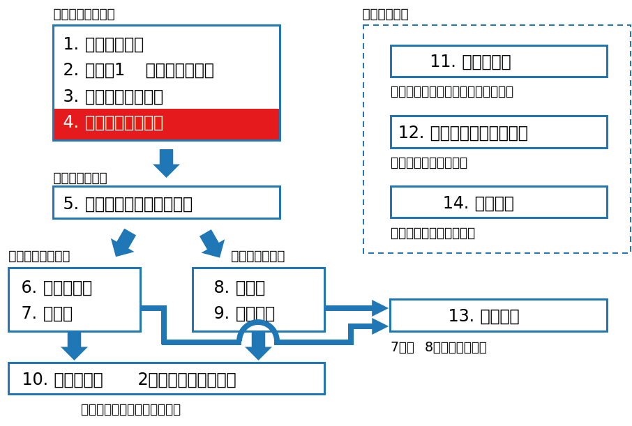

class: middle, center # 数理統計学特論I<br>第4回 統計量と標本分布 奥 牧人 (和漢研) 2022/05/11 --- # 前回の復習 前回の目的 * 多次元の確率変数に関する基本用語の意味を数式で理解すること 前回の達成目標 * 周辺確率の式を書ける。 * 独立性の定義の式を書ける。 * ヤコビアンの意味を説明できる。 * 共分散と相関係数の式の意味を説明できる。 * 多次元正規分布の式の意味を説明できる。 --- # 今回の位置付け  --- # 今回の目的と達成目標 目的 * 主な統計量と標本分布の意味を数式で理解すること 達成目標 * 標本平均と標本分散の式を書ける。 * $\chi^2$ 分布、$t$ 分布、$F$ 分布の意味を説明できる。 * 大数の法則と中心極限定理の式の意味を説明できる。 * 正規分布近似が使える条件を説明できる。 --- # 予習用キーワードの確認 * $\chi^2$ 分布 * $t$ 分布 * $F$ 分布 --- # Outline 1. 母集団と標本 2. 統計量と標本分布 3. 正規分布のもとでの標本分布論 4. 非心分布論 5. 確率論のいくつかの基本的な極限定理 6. 標本平均の分布の漸近理論 7. 順序統計量と経験分布関数 8. 有限母集団からの非復元抽出 --- # Outline 1. **母集団と標本** 2. 統計量と標本分布 3. 正規分布のもとでの標本分布論 4. 非心分布論 5. 確率論のいくつかの基本的な極限定理 6. 標本平均の分布の漸近理論 7. 順序統計量と経験分布関数 8. 有限母集団からの非復元抽出 --- # 母集団と標本 * 統計学では、データを母集団から無作為に抽出された標本と<br>捉え、そこから母集団について推測を行う。 * 母集団として仮定する分布族を統計モデルと呼ぶ。 * 基本的に標本の各値は独立同一分布に従うと仮定する。 * independently and identically distributed, i.i.d. * 無限母集団または復元抽出を仮定 * 推測とは、推定と検定のこと、と考えておけば良い。 * 例、平均値の推定、2群間の平均値の差の検定など --- # Outline 1. 母集団と標本 2. **統計量と標本分布** 3. 正規分布のもとでの標本分布論 4. 非心分布論 5. 確率論のいくつかの基本的な極限定理 6. 標本平均の分布の漸近理論 7. 順序統計量と経験分布関数 8. 有限母集団からの非復元抽出 --- # 標本平均と標本分散 * 標本平均 $$\bar X = \frac{1}{n}\sum_{i=1}^n X_i$$ * 標本分散 (不偏推定の場合) $$s^2 = \frac{1}{n-1}\sum_{i=1}^n (X_i-\bar X)^2$$ * 標本分散 (最尤推定の場合) <div>$$s_n^2 = \frac{1}{n}\sum_{i=1}^n (X_i-\bar X)^2$$</div> --- # 統計量と標本分布 * 統計量とは標本 $X=(X_1,\ldots,X_n)\in\mathscr{X}$ から実数値への写像 $$T: \mathscr{X} \to \mathbb{R}$$ * $T(X)$ 自体が確率変数 * 標本分布とは、統計量が従う分布のこと * $\chi^2$ 統計量が従う $\chi^2$ 分布 * $t$ 統計量が従う $t$ 分布 * $F$ 統計量が従う $F$ 分布 * 標本のデータ点の分布 (経験分布) と混同しないよう注意 --- # Outline 1. 母集団と標本 2. 統計量と標本分布 3. **正規分布のもとでの標本分布論** 4. 非心分布論 5. 確率論のいくつかの基本的な極限定理 6. 標本平均の分布の漸近理論 7. 順序統計量と経験分布関数 8. 有限母集団からの非復元抽出 --- # 仮定 * 母集団として正規分布を仮定 $$X_1,\ldots,X_n\stackrel{i.i.d.}{\sim} N(\mu,\sigma^2)$$ * $\mu$ は母平均、$\sigma^2$ は母分散 * これに対し、標本平均は $\bar X$, 不偏標本分散は $s^2$ --- # 標本平均の標本分布 * 正規分布に従う独立な確率変数の和は正規分布に従う。 * $\bar X$ の平均と分散を計算すれば、以下が分かる。 $$\bar X\sim N\left(\mu,\frac{\sigma^2}{n}\right)$$ * 分散が $1/n$ になる理由 $$\begin{align}V[\bar X] &= V\left[\frac{X_1+\cdots+X_n}{n}\right]\\\\&=\frac{1}{n^2}V[X_1+\cdots X_n]\\\\&=\frac{1}{n^2}\left(V[X_1]+\cdots+V[X_n]\right)\\\\&=\frac{1}{n^2}n\sigma^2\end{align}$$ --- # $\chi^2$ 分布 * $X_1,\ldots,X_k\stackrel{i.i.d.}{\sim}N(0,1)$ のとき、 $$\chi^2=X_1^2+\cdots+X_k^2$$ が従う分布を自由度 $k$ の $\chi^2$ 分布と呼ぶ。 * $\chi^2(k)$ はガンマ分布の特殊な場合で、$Ga(k/2,2)$ に相当する $$p(y)=\chi^2(k)=\frac{y^{k/2-1}e^{-y/2}}{2^{k/2}\Gamma(k/2)},\quad y>0$$ * 標本分散に関する $(n-1)s^2/\sigma^2$ が $\chi^2(n-1)$ に従う。 * 母分散は一般に未知なので、うまく消して使う。 --- # 自由度が $1$ 減る理由 * 簡単のため $\mu=0$, $\sigma=1$ とする。 * $X=(X_1,\ldots,X_n)^T$ とし、直交行列 $G$ で $Y=GX$ と変換 * 直交行列の性質より、$GG^T=G^TG=I$, $|\det G| = 1$ * $Y_1=\sqrt{n}\bar X$ となるよう $G$ の $1$ 行目を全て $1/\sqrt{n}$ とする * $Y\sim N(0,I_n)$ となり、また、以下の関係が成り立つ <div>$$\sum_{i=1}^nY_i^2=Y^TY=X^TG^TGX=X^TX=\sum_{i=1}^nX_i^2$$</div> * 以上より、実質的に $n-1$ 個の二乗和であることが示せる <div>$$\sum_{i=1}^n(X_i-\bar X)^2=\sum_{i=1}^n X_i^2-n\bar X^2=\sum_{i=1}^nY_i^2-Y_1^2=\sum_{i=2}^nY_i^2$$</div> --- # $t$ 分布 * $U\sim N(0,1)$, $V\sim\chi^2(m)$, $U\perp\\!\\!\\!\perp V$ のとき、 $$t=\frac{U}{\sqrt{V/m}}$$ が従う分布を自由度 $m$ の $t$ 分布と呼ぶ。 * 以下の $t$ 統計量は自由度 $n-1$ の $t$ 分布に従う $$t=\frac{\sqrt{n}(\bar X-\mu)}{s}$$ * $\bar X\sim N(\mu,\sigma^2/n)$ より、$\bar X$ を近似的に標準化したもの * 検定の際は $\mu=0$ を帰無仮説として仮定して使う。 --- # $t$ 分布の具体的な形 * 変数変換を使って計算出来る。 * 自由度 $m$ の $t$ 分布の確率密度関数 $$p(t)=\frac{\Gamma((m+1)/2)}{\sqrt{\pi m}\,\Gamma(m/2)}\left(1+\frac{t^2}{m}\right)^{-(m+1)/2}$$ --- # $F$ 分布 * $U\sim \chi^2(l)$, $V\sim\chi^2(m)$, $U\perp\\!\\!\\!\perp V$ のとき、 $$F=\frac{U/l}{V/m}$$ が従う分布を自由度 $(l,m)$ の $F$ 分布と呼ぶ。 * 先ほど $(n-1)s^2/\sigma^2$ が $\chi^2(n-1)$ に従うと説明した。 * このように $\sigma^2$ を含むものを分母と分子にして使う。 * 具体的な確率密度関数の形 (ベータ関数が含まれる) $$p(y)=\frac{l^{l/2}m^{m/2}}{B(l/2,m/2)}\frac{y^{l/2-1}}{(m+ly)^{(l+m)/2}}$$ --- # Outline 1. 母集団と標本 2. 統計量と標本分布 3. 正規分布のもとでの標本分布論 4. **非心分布論** 5. 確率論のいくつかの基本的な極限定理 6. 標本平均の分布の漸近理論 7. 順序統計量と経験分布関数 8. 有限母集団からの非復元抽出 --- # 非心分布 * 平均が $0$ でない場合の分布を非心分布と呼ぶ。 * 検出力の計算などで使う。 * 具体的な確率密度関数は無限級数を含む形で表される。 * 非心 $t$ 分布は、$U\perp\\!\\!\\!\perp V$, $U\sim N(\lambda,1)$, $V\sim \chi^2(m)$ のとき、$t=U/\sqrt{V/m}$ が従う分布 (自由度 $m$, 非心度 $\lambda$) * 非心 $\chi^2$ 分布は、$X_i\sim N(\mu_i,1),\ (i=1,\ldots,m)$ が独立のとき $\chi^2=\sum X_i^2$ が従う分布 (自由度 $m$, 非心度 $\lambda=\sum \mu_i^2$) * 非心 $F$ 分布は、$U\perp\\!\\!\\!\perp V$, $U\sim \chi^2(l,\lambda)$, $V\sim \chi^2(m)$ のとき、$F=(U/l)/(V/m)$ が従う分布 (自由度 $(l,m)$, 非心度 $\lambda$) --- # Outline 1. 母集団と標本 2. 統計量と標本分布 3. 正規分布のもとでの標本分布論 4. 非心分布論 5. **確率論のいくつかの基本的な極限定理** 6. 標本平均の分布の漸近理論 7. 順序統計量と経験分布関数 8. 有限母集団からの非復元抽出 --- # 母集団が正規分布以外の場合 * $t$ 分布、$F$ 分布、$\chi^2$ 分布は、いずれも母集団として正規分布を<br>仮定した場合に出てきたもの * 母集団が正規分布以外の場合は、同様な標本分布を明示的に計算出来ないことが多い。 * $n$ が大きいときは、正規分布近似が使える。 --- # 大数の法則 * 仮定 * ある分布 $F$ があって、$X_1,\ldots,X_n\stackrel{i.i.d.}{\sim}F$ * $E[X_i]=\mu$, $V[X_i]=\sigma^2$ が存在 * 大数の法則 $$\bar X \to \mu,\quad (n\to\infty)$$ * より正確に書くと、標本平均が母平均に確率収束する。 $$\forall\varepsilon>0,\quad \lim_{n\to\infty}P(|\bar X-\mu|\geq\varepsilon)=0$$ * 確率収束ということを明示するには $\bar X\stackrel{p}{\to}\mu$ のように書く。 --- # 大数の法則の証明の準備 * マルコフの不等式 * $X\geq 0$ とし、$E[X]<\infty$ とする。このとき、 $$\forall c>0,\quad P(X\geq c)\leq\frac{E[X]}{c}$$ * 証明は板書 * チェビシェフの不等式 * $X\in \mathbb{R}$ とし、$E[X]=\mu$, $V[X]=\sigma^2$ が存在するとき、 $$\forall c>0,\quad P(|X-\mu|\geq c)\leq\frac{\sigma^2}{c^2}$$ * マルコフの不等式に $X\leftarrow (X-\mu)^2$, $c\leftarrow c^2$ を代入 --- # 大数の法則の証明 * チェビシェフの不等式に $X\leftarrow \bar X$ を代入 ($V[\bar X]=\sigma^2/n$ に注意) $$\forall c>0,\quad P(|\bar X-\mu|\geq c)\leq\frac{\sigma^2}{nc^2}$$ * $n\to\infty$ で右辺が $0$ に収束、証明終 --- # 平均以外にも当てはまる * 例、分散 $$s^2\stackrel{p}{\to}\sigma^2,\quad (n\to\infty)$$ * 独立なものを足して $n$ で割る形にすれば良いので、 <div>$$\begin{align}s^2&=\frac{1}{n-1}\sum_{i=1}^n(X_i-\bar X)^2\\&=\frac{1}{n-1}\left(\sum_{i=1}^nX_i^2-n\bar X^2\right)\\&=\frac{n}{n-1}\left(\frac{1}{n}\sum_{i=1}^nX_i^2-\bar X^2\right)\\&\stackrel{p}{\to}1\times(E[X_i^2]-\mu^2)=\sigma^2\end{align}$$</div> --- # 中心極限定理 * 仮定は大数の法則の場合と同じ * $n$ が十分大きいとき、標本平均が近似的に正規分布に従う $$\bar X\stackrel{\cdot}{\sim}N\left(\mu, \frac{\sigma^2}{n}\right)$$ * より正確に書くと、標準化した標本平均の累積分布関数が標準正規分布の累積分布関数 $\Phi$ に分布収束する $$\forall x,\quad P\left(\frac{\sqrt{n}(\bar X-\mu)}{\sigma}\leq x\right)\to \Phi(x),\quad(n\to\infty)$$ --- # 分布収束 * 一般に、確率変数 $Z_n$ の累積分布関数 $F_n$ がある連続な累積分布関数 $F$ に分布収束するとは、以下が成り立つこと $$\forall x,\quad \lim_{n\to\infty}F_n(x)=F(x)$$ * 分布収束ということを明示するには $F_n\stackrel{d}{\to}F$ のように書く * $F$ を漸近分布または極限分布と呼ぶ --- # 特性関数の連続定理 * 中心極限定理の完全な証明は参考書の範囲外だが、ひとまず<br>以下の定理を正しいと仮定して証明を行う。 * 特性関数の連続定理 * $X_n, X$ の分布関数をそれぞれ $F_n,F$ とし、特性関数を $\phi_n(t),\phi(t)$ とする。$F_n$ が $F$ に分布収束するための必要十分条件は、各 $t$ について以下が成り立つことである。 $$\lim_{n\to\infty}\phi_n(t)\to\phi(t)$$ --- # 中心極限定理の証明 * $Z_i=(X_i-\mu)/\sigma$ とし、$\sqrt{n}\bar Z$ について考える。 * $E[Z_i]=0$, $V[Z_i]=1$ より、$Z$ の特性関数は以下のように<br>テーラー展開出来る ($o$ は、それより速く $0$ に収束、を表す) $$\phi(t)=1-\frac{t^2}{2}+o(t^2)$$ * このとき、$\sqrt{n}\bar Z=(Z_1+\cdots Z_n)/\sqrt{n}$ の特性関数は $$\begin{align}\phi_n(t)&=\phi(t/\sqrt{n})^n\\\\&=\left(1-\frac{t^2}{2n}+o\left(\frac{t^2}{n}\right)\right)^n\\\\&\to e^{-t^2/2},\quad (n\to\infty)\end{align}$$ * これは標準正規分布の特性関数である。証明終 --- # Outline 1. 母集団と標本 2. 統計量と標本分布 3. 正規分布のもとでの標本分布論 4. 非心分布論 5. 確率論のいくつかの基本的な極限定理 6. **標本平均の分布の漸近理論** 7. 順序統計量と経験分布関数 8. 有限母集団からの非復元抽出 --- # 二項分布の例 * $X\sim Bin(n,p)$ を $Y_1,\ldots,Y_n\stackrel{i.i.d.}{\sim}Bin(1,p)$ とみなす。 * $E[Y_i]=p$, $V[Y_i]=p(1-p)$ より、$n$ が十分大きければ $$\bar Y\stackrel{\cdot}{\sim}N\left(p,\frac{p(1-p)}{n}\right)$$ * $X=\sum_{i=1}^n Y_i=n\bar Y$ なので $$X\stackrel{\cdot}{\sim}N\left(np,np(1-p)\right)$$ * 二項分布が正規分布に収束することが確認出来た。 --- # $t$ 統計量の例 * $t$ 統計量 (再掲) $$t=\frac{\sqrt{n}(\bar X-\mu)}{s}$$ * $s\stackrel{p}{\to}\sigma$ より、$n$ が十分大きければ、たとえ母集団が正規分布では無かったとしても $$t\stackrel{\cdot}{\sim}N(0,1)$$ * $t$ 分布が正規分布に収束することが確認出来た。 --- # Outline 1. 母集団と標本 2. 統計量と標本分布 3. 正規分布のもとでの標本分布論 4. 非心分布論 5. 確率論のいくつかの基本的な極限定理 6. 標本平均の分布の漸近理論 7. **順序統計量と経験分布関数** 8. 有限母集団からの非復元抽出 --- # 順序統計量 * $X_1,\ldots,X_n\stackrel{i.i.d.}{\sim}F$ とする。 * これらを小さい順に並べたとき、$i$ 番目の値を第 $i$ 順序統計量と呼ぶことにする。 * 最大値 (第 $n$ 順序統計量) の標本分布 $$P\left(\max_i X_i\leq x\right)=F(x)^n$$ * 最小値 (第 $1$ 順序統計量) の標本分布 $$P\left(\min_i X_i\leq x\right)=1-(1-F(x))^n$$ --- # 経験分布 * 標本のデータ点の分布を経験分布と呼ぶ。 * 例えば、実現値が $\\{1,2,2,3,3,3,3\\}$ だった場合、経験分布の<br>確率質量関数は $$p(1)=\frac{1}{7},\quad p(2)=\frac{2}{7},\quad p(3)=\frac{4}{7}$$ * 経験分布から改めて標本を抽出することを、標本からのリサンプリング (再抽出) と呼ぶ。 * 標本からのリサンプリングを復元抽出で繰り返し行い、それに<br>基づいて統計的推測をすることをブートストラップ法と呼ぶ。 --- # Outline 1. 母集団と標本 2. 統計量と標本分布 3. 正規分布のもとでの標本分布論 4. 非心分布論 5. 確率論のいくつかの基本的な極限定理 6. 標本平均の分布の漸近理論 7. 順序統計量と経験分布関数 8. **有限母集団からの非復元抽出** --- # 有限母集団からの非復元抽出 * 母集団の大きさを $N$ とし、平均 $\mu$, 分散 $\sigma^2$ とする。 * $n$ 点を非復元抽出した場合の標本平均の期待値と分散 $$\begin{align}E[\bar X]&=\mu\\\\V[\bar X]&=\frac{N-n}{N-1}\frac{\sigma^2}{n}\end{align}$$ * $(N-n)/(N-1)$ を有限修正と呼ぶ。 --- # まとめ (前半) 主な統計量と標本分布の意味を説明しました。 1. 母集団と標本 2. 統計量と標本分布 <span class="times">!</span> 標本平均と標本分散の式を書ける? 3. 正規分布のもとでの標本分布論 <span class="times">!</span> $\chi^2$ 分布、$t$ 分布、$F$ 分布の意味を説明できる? 4. 非心分布論 --- # まとめ (後半) 主な統計量と標本分布の意味を説明しました。 <ol> <li value="5">確率論のいくつかの基本的な極限定理</li> <li class="list-unstyled"><span class="times">!</span> 大数の法則と中心極限定理の式の意味を説明できる?</li> <li value="6">標本平均の分布の漸近理論</li> <li class="list-unstyled"><span class="times">!</span> 正規分布近似が使える条件を説明できる?</li> <li value="7">順序統計量と経験分布関数</li> <li value="8">有限母集団からの非復元抽出</li> </ol> --- # 小テスト * Moodleで小テストに回答して下さい。 * **期限は今週中** (日曜の23:59まで) とします。 * 繰り返し受験して構いません。最高得点で成績をつけます。 --- # 次回の予習用キーワード * 平均二乗誤差 * ミニマックス法